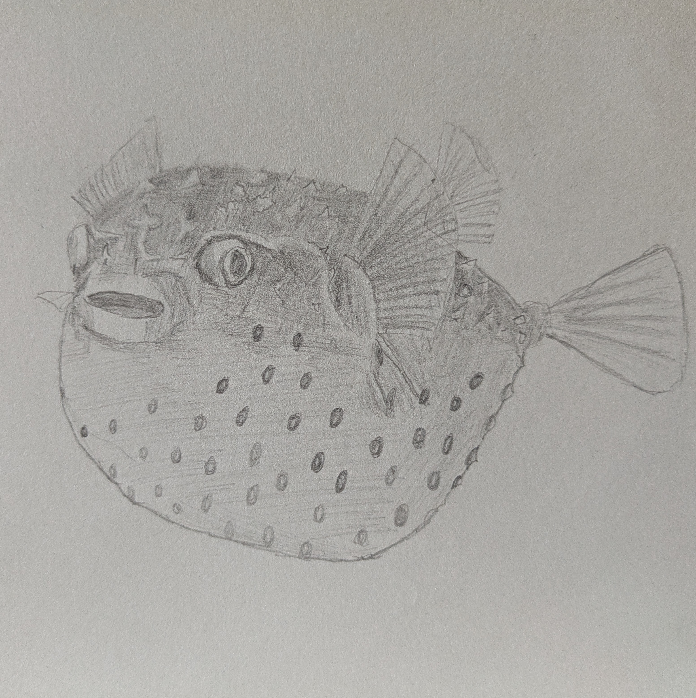

Daily Driving OpenBSD
I first tried OpenBSD when 7.4 was the newest version, about a year and a half ago. It didn’t immediately take, but I found myself back there with version 7.5 and it’s been my main OS ever since. It’s a bit of a niche choice, so I thought it’d be fun to write a little about my thoughts on this fishy little operating system now that it’s been about a year of using it.

Bloop...
Why I Use It
OpenBSD has earned a reputation as the first-choice Unix-like system for the pragmatic paranoid. It has a slightly different approach to its sibling BSDs (FreeBSD, NetBSD, DragonflyBSD) and a very different approach to its distant cousin MacOS. Its benevolent dictator for life, Theo de Raadt, does not hesitate to pull out unmaintained or insecure code. This approach has led to the entire Bluetooth subsystem being removed, and means that OpenBSD no longer contains any unmodified source code from its 4.3BSD ancestor.
Development of this operating system prioritises simplicity, code quality, stability, security, and predictability. The whole base system makes sense. It’s a complete, ready-to-go OS which includes X11 (in the form of Xenocara, a soft fork of Xorg prioritising security) and a variety of server software. The code is regularly audited and bugs squashed. Default configurations are sane if a little cautious. Hardware support is a little limited in places but thorough and dependable if you’ve got the right kit (oldish ThinkPads).
Some of OpenBSD’s security innovations (as well as miscellaneous other components) have made their way into other operating systems, particularly other BSDs (including MacOS). OpenSSH and the pf packet filter are the most visible of these, with even MicroSoft Windows making use of them. Other, lower-level parts have made their way into Android (the Bionic standard library uses a lot of OpenBSD code) and the LLVM compiler (they use OpenBSD’s regexp library). There are a few interesting features that have stayed local, however. These include the syscalls pledge and unveil, which limit which syscalls a given program can make and which parts of the filesystem they can see respectively. There’s also a lot of interesting cryptography and randomisation stuff in there which helps keep the system secure.
Honestly, though, the security stuff is just a bonus for me. I like how coherent the base system is. I like their version of the Korn shell. I like how ready-to-go it is after an easy install. Third-party software packages have, in my experience, been much more reliable on OpenBSD than on FreeBSD, and the base system is more complete. Hardware support is better than NetBSD (provided you don’t rely on Bluetooth) and the OS gets much more frequent updates. It’s just bloody lovely. Some of the security features impact performance a bit, but not enough to trouble me. An example: hyperthreading/simultaneous multi-threading is disabled by default due to inherent security flaws in the implementation (think Spectre and Meltdown). You can turn it on if you want, but the kernel code isn’t optimised for it so you likely won’t see much/any benefit anyway.
Limitations
Now, I don’t want to be overly sycophantic, so I’ll address a couple of the issues with OpenBSD, as I see them. There are three that affect me, and two of those I care about enough to occasionally consider moving.
Firstly, the aforementioned Bluetooth. This is the one I’m not that fussed by. I don’t use Bluetooth on my laptops, so it’s kinda whatever. It is, however, a pretty glaring omission. I’ve occasionally thought that I might like to have a go at writing a Bluetooth subsystem myself, once my C skills get to that level. We’ll see if that ever happens.
Secondly, the hypervisor isn’t as capable as I’d like. OpenBSD has VMD, which makes use of the advanced virtualisation capabilities of modern processor to give a performance boost to virtual machines. However, it can’t do multi-processor, graphics, or PCIe pass-through. Linux’ KVM, FreeBSD’s bhyve, and NetBSD’s NVMM are superior. Virtualisation isn’t a huge part of my workflow so I can live without it, plus I’ve got a beefy desktop in my bedroom running Void Linux if I really need to spin up a high-performance graphical VM for something, but it’d be nice to be able to run a Linux VM for proprietary software on my daily driver laptop.
The other thing is the filesystem. FFS2. It’s pretty basic. It lacks the feature-richness of more modern filesystems like ZFS (standard filesystem in FreeBSD and Illumos, available in NetBSD and Linux) or Linux’ BTRFS. I haven’t had any issues with it, but you do occasionally hear horror stories. I’d like to see it at least iterated on, to have a couple of sexy new features added. Snapshots would be a dream. This, again, is something I’d like to contribute to if I get good enough at systems development.
Other Operating Systems I use
OpenBSD isn’t all I use, of course. I run GrapheneOS on my phone. This is a security-focused Android operating system that keeps Google on a leash. I like it better than stock Android, but it only runs on Google Pixels.
Other OSes for ‘proper’ computers, for me, consist of the following:
- Desktop: Void Linux
- Bedroom writing laptop: NetBSD
- Travel laptop: Debian GNU/Linux with OpenRC in place of systemd
- Servers: Debian x2, OpenBSD x1
I also have a spare SSD with FreeBSD installed that I plug into my bedroom laptop (a ThinkPad T430 that was previously my daily driver running OpenBSD, before I upgraded to my current T480). I like all of these. I also like Slackware Linux and Alpine Linux. They all have their strengths and unique character. OpenBSD, though, is my favourite.
Side note: Ironically, the bulk of this entry’s first draft was written on my NetBSD bedroom laptop. Edits, formatting, all that stuff was on my OpenBSD T480, however.
Would I Recommend OpenBSD?
For most people? Nah. You need to love Unix-like operating systems and not have much use for any of the features that OpenBSD doesn’t have if you’re gonna be happy with this. But if you do tick those two boxes, then this is just about the best thing out there. If you’ve got a bit of tech know-how and you’re a shade paranoid, give it a go. Throw it on a several-years-old ThinkPad and get used to using ksh and nvi instead of bash and vim. It doesn’t try as hard as FreeBSD to do everything Linux does, but what it does do is done exceptionally well.
That’s all from me for now.
Toodles,
–Antony F.